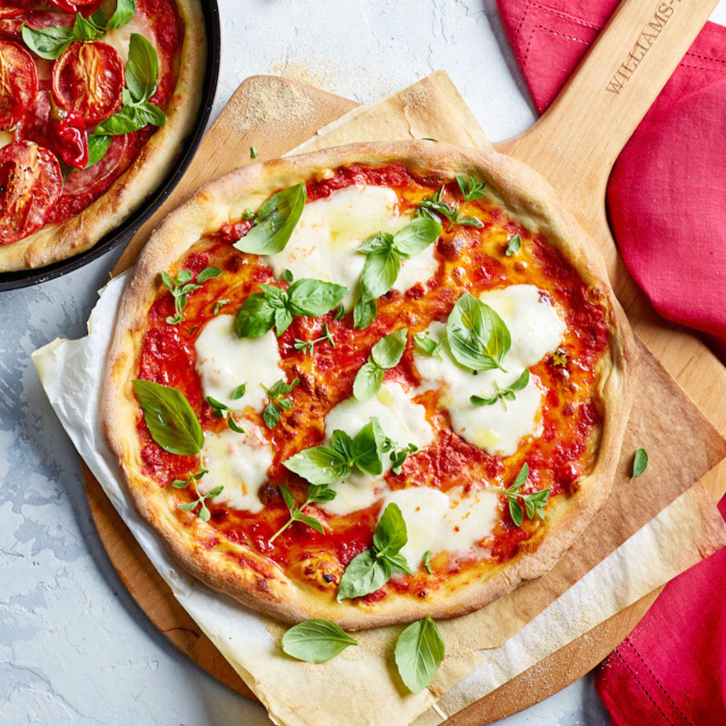

Margherita Pizza

Description
Margherita pizza history has it that this Neapolitan
pie was created in 1889, when Italian chef Raffaele
Esposito visited Queen Margherita of Savoy in Naples
and was tasked with making her a special dish.
Esposito and his wife whipped up a pizza using basil,
mozzarella and tomato sauce to resemble the Italian flag.
They appropriately dubbed it the “Margherita Pizza” after
the Queen herself.
Ingredients
- 1 Recipe Pizza Dough
- 1/2 cup Pizza Sauce
- 2 cups Fresh Sliced Mozzarella
- 1/4 cup Parmesan Cheese
- Fresh Basil Leaves
Steps
-
Preheat oven to 475F. Prepare all ingredients for
the margherita pizza.
-
On a floured surface, roll the dough into the desired shape.
Top it off with pizza sauce, pieces of fresh mozzarella and
sprinkle a bit of parmesan cheese.
-
Bake pizza for about 14 minutes or until the crust is
lightly browned and the cheese is golden.
-
Remove pizza from the oven, top it off with fresh basil.
Serve pizza right away, while the cheese is all melted.